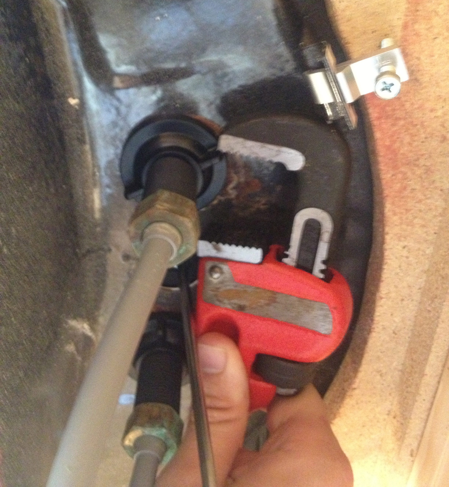

Tools
are for
Smart
People
Brandon Lorenz
@blorenz
Hi!
Brandon Lorenz
By Day
Front End Web Developer, Victoria's Secret
By Night
Full-stack Developer, Freelancer, Developer on cannon.fm, Amateur SysAdmin and DBA
Member of Central Ohio Python Users Group
I ♡ Django
What do I know about tools?
I used to be one

1999
But seriously
I get bored doing mundane and repetitive tasks
I'm pretty lazy
I'm prone to mistakes
So I try to AUTOMATE EVERYTHING!
The Right Tool for the Job
Problem.
More Problem.
:(
???
!
!!!
:)

The Right Tool for the Job
Types of Tools
A brief look at how I classify tools
Generators
Take a small input and produce a large output
| Brunch | |
| Yeoman |
Facilitators
Abstract a more complex problem into a lightweight interface
 | jQuery |
 | Grunt |
Compilers
Create a lower-level language from a higher-level syntax
 | Sass |
 | Less |
 | Haml |
 | CoffeeScript |
Validators
Ensure validity, consistency and quality
 | JSLint |
| CSSLint | |
 | W3C Validator |
Frameworks
Provide a convention and set approach to a problem
 | Bootstrap |
| 1140 | |
 | Backbone |
| Spine |
Tools can do Awesome Things!
Golden Hammer
Law of the Instrument
I suppose it is tempting, if the only tool you have is a hammer, to treat everything as if it were a nail.
- Abraham Maslow, American Psychologist
Over-reliance on a familiar tool
If I were a Sculptor...
What to Expect when you're expecting
to use tools
to use tools
Afford Opportunity for Evaluation
Each tool will have its own learning curve
Read the Docs
At least one time, you will choose unwisely
Try Again!
Polyglot Approach
The best tool may not be in:
Ruby, Python, Node, sh, Java, Haskell, or whatever else.
You might will spend some time on Stack Overflow.
Use your brain.
Python
fabric
virtualenv
Ruby
Compass/Sass
Haml
Puppet
Node
CoffeeScript
Brunch
Yeoman
Get to Know the Process first
If things go awry, it is good to know how it works
And so you can have mad respect for what the tool is buying you.